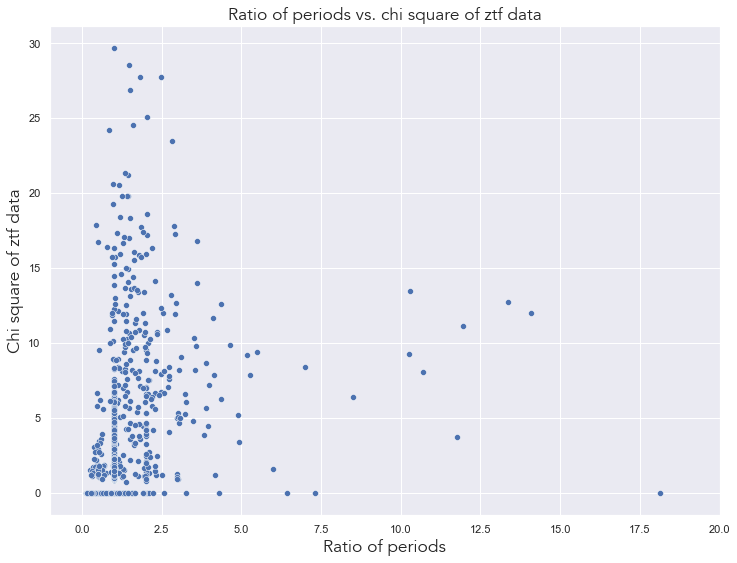
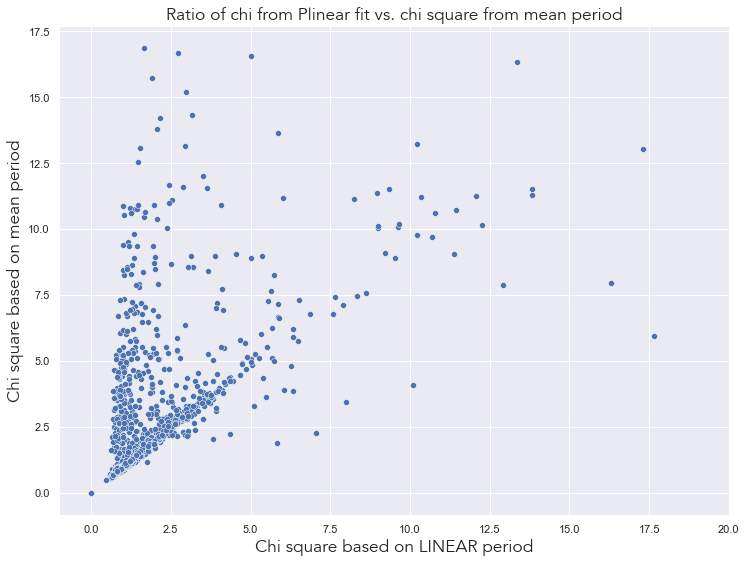
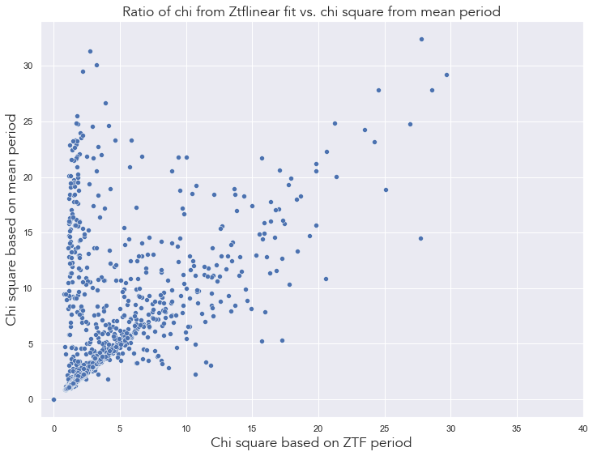
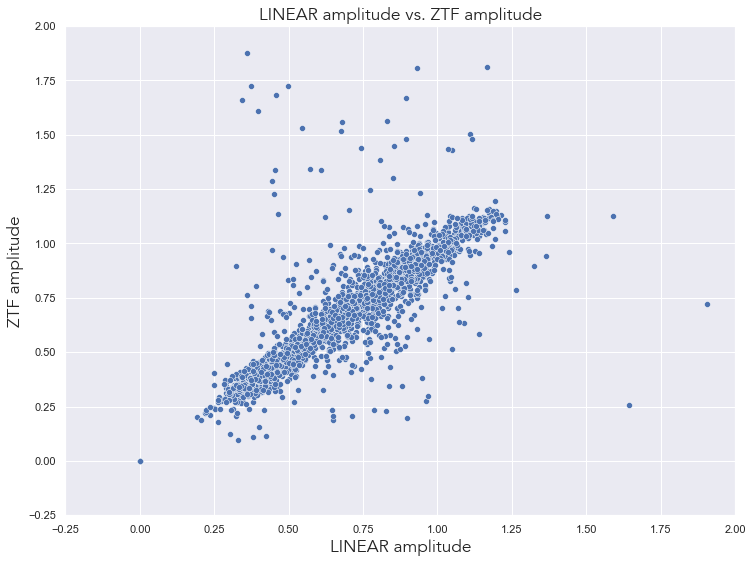
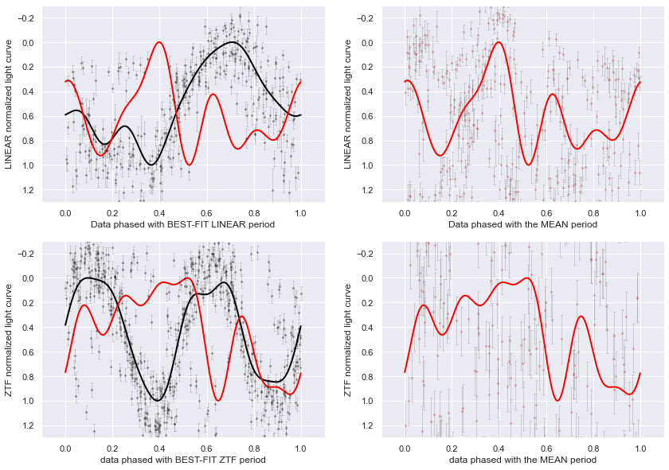
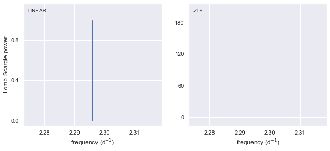
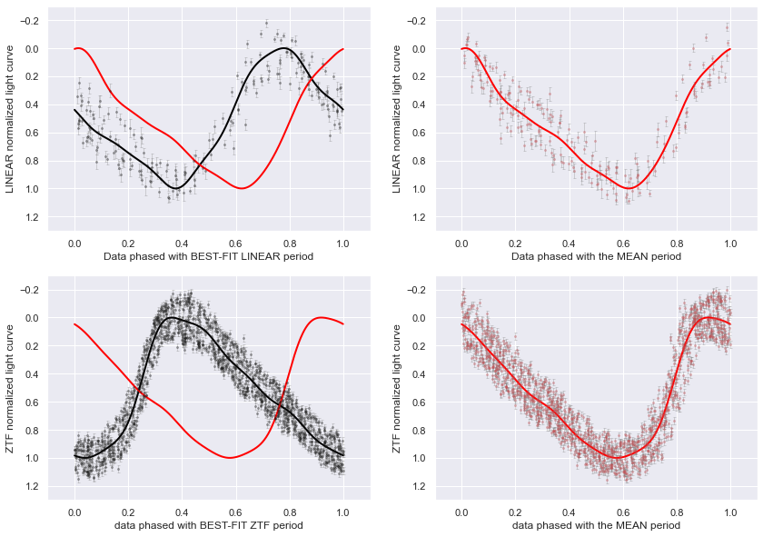
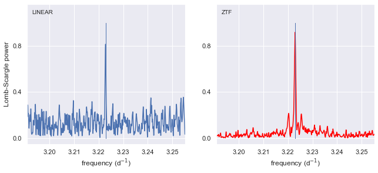

Code
%load_ext autoreload
%autoreload 2%load_ext autoreload
%autoreload 2In this notebook we are analyzing the data calculated in nb 03 in order to look into possible Blazhko stars.
# IMPORTING LIBRARIES
# --------------------
# AstroML & Astropy
from astroML.datasets import fetch_LINEAR_sample
from astropy.timeseries import LombScargle
from astroML.datasets import fetch_LINEAR_sample
from astroML.datasets import fetch_LINEAR_geneva
from astropy.timeseries import TimeSeries
from astropy.table import Table
from astroML.time_series import MultiTermFit
# ZTF
from ztfquery import lightcurve
# Basic libraries
import random
import pickle
import os
import sys
from tqdm import tqdm
# Plotting
import seaborn as sns
from matplotlib import pyplot as plt
from matplotlib import ticker
import matplotlib.colors as mcolors
from matplotlib.font_manager import FontProperties
# DataFrame analysis
import pandas as pd
import dask.dataframe as dd
# Math libraries
import numpy as np
import scipy as sc
from scipy.stats import norm
from scipy.signal import find_peaks
from array import array# CONFIG
sns.set_theme() # setting the theme for plotting
np.random.seed(42)
colors = ['#1A090D', '#D8C99B', '#D8973C', '#BD632F', '#273E47']
cmap = mcolors.ListedColormap(colors)
font = FontProperties()
font.set_family('avenir')
font.set_name('Avenir')
font.set_style('normal')
font.set_size('xx-large')
%matplotlib inline # Importing custom libraries
# ----------------------------
sys.path.insert(0,'../src/')
from config import*
from descriptive_stats import *
from plots import *
from selection import *
from lc_analysis import *Loading the data!# DATA
data = fetch_LINEAR_sample(data_home='../inputs') # fetching the data from astroML data libraryHere we are loading the data calculated in notebook 03 Analyzing RR Lyrae. We load the light curve analysis DataFrame, the periodograms and the fits of every light curve.
lightcurve_analysis = pd.read_csv('../outputs/LC_ANALYSIS_FINAL.csv')
lightcurve_analysis.head()| LINEAR id | Plinear | Pztf | Pmean | Pratio | NdataLINEAR | LPlin_rmsdmag | LPlin_chi2dof | LPlin_chi2dofR | LPmean_rmsdmag | ... | ZPztf_chi2dofR | ZPmean_rmsdmag | ZPmean_chi2dof | ZPmean_chi2dofR | Zmmax | Zampl | Lindicator | Llimit | Zindicator | Zlimit | |
|---|---|---|---|---|---|---|---|---|---|---|---|---|---|---|---|---|---|---|---|---|---|
| 0 | 29848 | 0.557021 | 0.557037 | 0.557029 | 1.000028 | 301.0 | 0.178198 | 3.028026 | 1.451336 | 0.185326 | ... | 3.645075 | 0.052598 | 16.195588 | 3.955532 | 15.756993 | 0.925157 | 0 | 0.25 | 0.0 | 0.25 |
| 1 | 50402 | 0.643301 | 0.643296 | 0.643298 | 0.999992 | 284.0 | 0.107683 | 0.595738 | 0.733869 | 0.106092 | ... | 1.162370 | 0.031558 | 2.097207 | 1.177316 | 16.088901 | 0.486372 | 0 | 0.25 | 0.0 | 0.25 |
| 2 | 62892 | 0.530776 | 0.530785 | 0.530781 | 1.000017 | 276.0 | 0.108544 | 1.058829 | 0.934727 | 0.114002 | ... | 3.137436 | 0.069562 | 19.794606 | 3.288505 | 15.961735 | 0.641651 | 1 | 0.25 | 0.0 | 0.25 |
| 3 | 91437 | 0.674732 | 0.674738 | 0.674735 | 1.000009 | 177.0 | 0.040798 | 2.775415 | 1.352923 | 0.040888 | ... | 1.556614 | 0.020152 | 4.243845 | 1.580792 | 15.002323 | 0.864724 | 0 | 0.25 | 0.0 | 0.25 |
| 4 | 95250 | 0.313870 | 0.313876 | 0.313873 | 1.000019 | 222.0 | 0.162040 | 0.816590 | 0.859616 | 0.165801 | ... | 1.341415 | 0.054686 | 3.709448 | 1.515406 | 16.680144 | 0.461509 | 1 | 0.25 | 0.0 | 0.25 |
5 rows × 27 columns
periodograms = pickle.load(open("../outputs/periodograms_final.pkl", "rb"))FITS = np.load('../outputs/fits_whole.npy', allow_pickle=True)FileNotFoundError: [Errno 2] No such file or directory: '../outputs/fits_whole.npy'plt.figure(figsize=(12,9))
sns.scatterplot(lightcurve_analysis, x='Pratio', y='ZPztf_chi2dofR')
plt.xlim(-1, 20)
plt.title('Ratio of periods vs. chi square of ztf data', fontproperties=font)
plt.xlabel('Ratio of periods', fontproperties=font)
plt.ylabel('Chi square of ztf data', fontproperties=font)
plt.show()
From the graph above we can see that most ratios of periods focus around the 1 mark, with chi quare values increasing along that line. There is another line present which indicates 0 chi square and increasing ratio of periods. The rest of the data is scattered on the graph.
plt.figure(figsize=(12,9))
sns.scatterplot(lightcurve_analysis, x='Pratio', y='LPlin_chi2dofR')
plt.xlim(-1, 20)
plt.title('Ratio of periods vs. chi square of LINEAR data', fontproperties=font)
plt.xlabel('Ratio of periods', fontproperties=font)
plt.ylabel('Chi square of LINEAR data', fontproperties=font)
plt.show()
From the graph above, we can see the same pattern as with the ZTF data, showing that they are actually quite similar. However, more ratios of periods are scattered near the lower end of the graph (smaller chi values).
plt.figure(figsize=(12,9))
sns.scatterplot(lightcurve_analysis, x='LPlin_chi2dofR', y='LPmean_chi2dofR')
plt.xlim(-1, 20)
plt.title('Ratio of chi from Plinear fit vs. chi square from mean period', fontproperties=font)
plt.xlabel('Chi square based on LINEAR period', fontproperties=font)
plt.ylabel('Chi square based on mean period', fontproperties=font)
plt.show()
As expected, most values fall on a diagonal line indicating that they should be the same, however a sizeable fraction isn’t the same as the mean value, indicating that the ZTF period is pushing the mean towards a different direction than the original LINEAR period.
plt.figure(figsize=(12,9))
sns.scatterplot(lightcurve_analysis, x='ZPztf_chi2dofR', y='ZPmean_chi2dofR')
plt.xlim(-1, 40)
plt.title('Ratio of chi from Ztflinear fit vs. chi square from mean period', fontproperties=font)
plt.xlabel('Chi square based on ZTF period', fontproperties=font)
plt.ylabel('Chi square based on mean period', fontproperties=font)
plt.show()
From the graph above we can also see a diagonal line indicating equality, however the data is slightly more scattered than in the LINEAR graph.
plt.figure(figsize=(12,9))
sns.scatterplot(lightcurve_analysis, x='Lampl', y='Zampl')
plt.xlim(-0.25, 2)
plt.ylim(-0.25, 2)
plt.title('LINEAR amplitude vs. ZTF amplitude', fontproperties=font)
plt.xlabel('LINEAR amplitude', fontproperties=font)
plt.ylabel('ZTF amplitude', fontproperties=font)
plt.show()
As we can see from the graph above, the “equality” line above is quite thick, however there are few scattered light curves. This indicates that there are commonly small changes in the amplitudes.
In this section we will create subsets of the total database based on special parameters, slowly loosening the criteria for a Blazhko star until we reach the final criterium. In between datasets we will analyze their fits and periodograms.
The parameters:
Ratio of Periods: must be below 0.99 and above 1.01 (when rounded to 2 decimals).
Chi square: has to be above 3 for a significant change for the Blazhko effect.
Indicator from periodogram: Zindicator and Lindicator should be 1 (however in other situations one or the either can be 1).
Amplitude: if the amplitude change is greater than 0.01.
BLAZHKO_STARS = pd.DataFrame(())lightcurve_analysis['Pratio'] = round(lightcurve_analysis['Pratio'], 4)
lightcurve_analysis['Ampl_diff'] = round(abs(lightcurve_analysis['Lampl'] - lightcurve_analysis['Zampl']), 3)
lightcurve_analysis.head()| LINEAR id | Plinear | Pztf | Pmean | Pratio | NdataLINEAR | LPlin_rmsdmag | LPlin_chi2dof | LPlin_chi2dofR | LPmean_rmsdmag | ... | ZPmean_rmsdmag | ZPmean_chi2dof | ZPmean_chi2dofR | Zmmax | Zampl | Lindicator | Llimit | Zindicator | Zlimit | Ampl_diff | |
|---|---|---|---|---|---|---|---|---|---|---|---|---|---|---|---|---|---|---|---|---|---|
| 0 | 29848 | 0.557021 | 0.557037 | 0.557029 | 1.0 | 301.0 | 0.178198 | 3.028026 | 1.451336 | 0.185326 | ... | 0.052598 | 16.195588 | 3.955532 | 15.756993 | 0.925157 | 0 | 0.25 | 0.0 | 0.25 | 0.358 |
| 1 | 50402 | 0.643301 | 0.643296 | 0.643298 | 1.0 | 284.0 | 0.107683 | 0.595738 | 0.733869 | 0.106092 | ... | 0.031558 | 2.097207 | 1.177316 | 16.088901 | 0.486372 | 0 | 0.25 | 0.0 | 0.25 | 0.001 |
| 2 | 62892 | 0.530776 | 0.530785 | 0.530781 | 1.0 | 276.0 | 0.108544 | 1.058829 | 0.934727 | 0.114002 | ... | 0.069562 | 19.794606 | 3.288505 | 15.961735 | 0.641651 | 1 | 0.25 | 0.0 | 0.25 | 0.017 |
| 3 | 91437 | 0.674732 | 0.674738 | 0.674735 | 1.0 | 177.0 | 0.040798 | 2.775415 | 1.352923 | 0.040888 | ... | 0.020152 | 4.243845 | 1.580792 | 15.002323 | 0.864724 | 0 | 0.25 | 0.0 | 0.25 | 0.004 |
| 4 | 95250 | 0.313870 | 0.313876 | 0.313873 | 1.0 | 222.0 | 0.162040 | 0.816590 | 0.859616 | 0.165801 | ... | 0.054686 | 3.709448 | 1.515406 | 16.680144 | 0.461509 | 1 | 0.25 | 0.0 | 0.25 | 0.022 |
5 rows × 28 columns
chi = 3.0
pratio_less = 0.99
pratio_more = 1.01
ampl = 0.01chi_criteria = lightcurve_analysis.loc[(lightcurve_analysis['LPlin_chi2dofR'] > chi) &
(lightcurve_analysis['ZPztf_chi2dofR'] >chi) #&
#((lightcurve_analysis['Pratio'] > pratio_less) |
#(lightcurve_analysis['Pratio'] < pratio_more)) &
#(lightcurve_analysis['Lindicator'] ==1) &
#(lightcurve_analysis['Zindicator'] ==1) &
#(lightcurve_analysis['Ampl_diff'] > ampl)
]
print(f'This dataset has {chi_criteria.shape[0]} rows and {chi_criteria.shape[1]} columns.')
chi_criteria.head()This dataset has 66 rows and 28 columns.| LINEAR id | Plinear | Pztf | Pmean | Pratio | NdataLINEAR | LPlin_rmsdmag | LPlin_chi2dof | LPlin_chi2dofR | LPmean_rmsdmag | ... | ZPmean_rmsdmag | ZPmean_chi2dof | ZPmean_chi2dofR | Zmmax | Zampl | Lindicator | Llimit | Zindicator | Zlimit | Ampl_diff | |
|---|---|---|---|---|---|---|---|---|---|---|---|---|---|---|---|---|---|---|---|---|---|
| 145 | 1790596 | 0.534497 | 0.534504 | 0.534501 | 1.0000 | 509.0 | 0.110318 | 19.384713 | 3.068320 | 0.108207 | ... | 0.061888 | 15.573548 | 3.273950 | 15.050388 | 0.718432 | 1 | 0.25 | 0.0 | 0.25 | 0.072 |
| 170 | 2050107 | 0.686454 | 0.686468 | 0.686461 | 1.0000 | 190.0 | 0.089110 | 16.505828 | 3.903771 | 0.090967 | ... | 0.085768 | 22.743994 | 3.355955 | 14.302818 | 0.645090 | 0 | 0.25 | 0.0 | 0.25 | 0.138 |
| 186 | 2224955 | 0.999967 | 0.998525 | 0.999246 | 0.9986 | 139.0 | 0.000007 | 70.546675 | 6.054673 | 0.160561 | ... | 0.005114 | 253.611609 | 3.326470 | -60.825583 | 76.493428 | 0 | 0.25 | 0.0 | 0.25 | 25653.388 |
| 192 | 2243683 | 0.579775 | 0.579800 | 0.579787 | 1.0000 | 531.0 | 0.145114 | 22.047335 | 3.164640 | 0.148300 | ... | 0.092839 | 40.237676 | 4.084559 | 14.963473 | 0.559560 | 1 | 0.25 | 0.0 | 0.25 | 0.038 |
| 205 | 2333087 | 0.551462 | 0.551424 | 0.551443 | 0.9999 | 560.0 | 0.136958 | 29.844745 | 3.543160 | 0.126088 | ... | 0.135812 | 56.853700 | 5.601486 | 15.102440 | 0.580700 | 1 | 0.25 | 0.0 | 0.25 | 0.138 |
5 rows × 28 columns
pratio_criteria = lightcurve_analysis.loc[#(lightcurve_analysis['LPlin_chi2dofR'] > chi) &
#(lightcurve_analysis['ZPztf_chi2dofR'] >chi) #&
((lightcurve_analysis['Pratio'] < pratio_less) |
(lightcurve_analysis['Pratio'] > pratio_more)) #&
#(lightcurve_analysis['Lindicator'] ==1) &
#(lightcurve_analysis['Zindicator'] ==1) &
#(lightcurve_analysis['Ampl_diff'] > ampl)
]
print(f'This dataset has {pratio_criteria.shape[0]} rows and {pratio_criteria.shape[1]} columns.')
pratio_criteria.head()This dataset has 558 rows and 28 columns.| LINEAR id | Plinear | Pztf | Pmean | Pratio | NdataLINEAR | LPlin_rmsdmag | LPlin_chi2dof | LPlin_chi2dofR | LPmean_rmsdmag | ... | ZPmean_rmsdmag | ZPmean_chi2dof | ZPmean_chi2dofR | Zmmax | Zampl | Lindicator | Llimit | Zindicator | Zlimit | Ampl_diff | |
|---|---|---|---|---|---|---|---|---|---|---|---|---|---|---|---|---|---|---|---|---|---|
| 5 | 104455 | 0.997210 | 0.779404 | 0.888307 | 0.7816 | 119.0 | 0.000019 | 3.340609 | 1.637698 | 0.479566 | ... | 0.476834 | 198.977212 | 15.997038 | 16.426643 | 0.860027 | 0 | 0.25 | 0.0 | 0.25 | 11782.102 |
| 6 | 108513 | 0.473809 | 0.736965 | 0.605387 | 1.5554 | 282.0 | 0.125636 | 3.973136 | 1.377105 | 0.524794 | ... | 0.156509 | 258.336340 | 18.970065 | 15.968586 | 0.995635 | 0 | 0.25 | 0.0 | 0.25 | 0.131 |
| 17 | 258499 | 0.401505 | 0.803006 | 0.602256 | 2.0000 | 275.0 | 0.123031 | 2.711071 | 1.493619 | 0.409720 | ... | 1.675283 | 130.180418 | 15.710401 | 15.247629 | 0.372447 | 0 | 0.25 | 0.0 | 0.25 | 0.031 |
| 20 | 309626 | 0.595840 | 0.798118 | 0.696979 | 1.3395 | 215.0 | 0.097048 | 20.984336 | 2.895945 | 0.429714 | ... | 0.317934 | 357.068832 | 18.446596 | 14.630699 | 0.802739 | 0 | 0.25 | 0.0 | 0.25 | 0.119 |
| 31 | 608497 | 0.485636 | 0.781323 | 0.633479 | 1.6089 | 556.0 | 0.080462 | 20.343992 | 2.499514 | 1.081689 | ... | 0.834255 | 626.442325 | 27.802733 | 15.276444 | 0.504662 | 0 | 0.25 | 0.0 | 0.25 | 0.357 |
5 rows × 28 columns
indicator_L = lightcurve_analysis.loc[#(lightcurve_analysis['LPlin_chi2dofR'] > chi) &
#(lightcurve_analysis['ZPztf_chi2dofR'] >chi) #&
#((lightcurve_analysis['Pratio'] < pratio_less) |
#(lightcurve_analysis['Pratio'] > pratio_more)) #&
(lightcurve_analysis['Lindicator'] ==1) #&
#(lightcurve_analysis['Zindicator'] ==1) &
#(lightcurve_analysis['Ampl_diff'] > ampl)
]
print(f'This dataset has {indicator_L.shape[0]} rows and {indicator_L.shape[1]} columns.')
indicator_L.head()This dataset has 558 rows and 28 columns.| LINEAR id | Plinear | Pztf | Pmean | Pratio | NdataLINEAR | LPlin_rmsdmag | LPlin_chi2dof | LPlin_chi2dofR | LPmean_rmsdmag | ... | ZPmean_rmsdmag | ZPmean_chi2dof | ZPmean_chi2dofR | Zmmax | Zampl | Lindicator | Llimit | Zindicator | Zlimit | Ampl_diff | |
|---|---|---|---|---|---|---|---|---|---|---|---|---|---|---|---|---|---|---|---|---|---|
| 2 | 62892 | 0.530776 | 0.530785 | 0.530781 | 1.0 | 276.0 | 0.108544 | 1.058829 | 0.934727 | 0.114002 | ... | 0.069562 | 19.794606 | 3.288505 | 15.961735 | 0.641651 | 1 | 0.25 | 0.0 | 0.25 | 0.017 |
| 4 | 95250 | 0.313870 | 0.313876 | 0.313873 | 1.0 | 222.0 | 0.162040 | 0.816590 | 0.859616 | 0.165801 | ... | 0.054686 | 3.709448 | 1.515406 | 16.680144 | 0.461509 | 1 | 0.25 | 0.0 | 0.25 | 0.022 |
| 7 | 136668 | 0.532922 | 0.532929 | 0.532926 | 1.0 | 310.0 | 0.122892 | 1.639568 | 1.114588 | 0.121226 | ... | 0.050996 | 19.659028 | 2.478210 | 16.107864 | 0.775380 | 1 | 0.25 | 0.0 | 0.25 | 0.046 |
| 9 | 142794 | 0.470787 | 0.470804 | 0.470796 | 1.0 | 270.0 | 0.095738 | 1.814911 | 0.991759 | 0.100813 | ... | 0.060053 | 40.406637 | 3.570589 | 15.745773 | 0.815178 | 1 | 0.25 | 0.0 | 0.25 | 0.093 |
| 12 | 163933 | 0.339629 | 0.339626 | 0.339628 | 1.0 | 306.0 | 0.064185 | 0.972501 | 0.882843 | 0.066518 | ... | 0.024081 | 0.991889 | 1.002086 | 15.262747 | 0.463487 | 1 | 0.25 | 0.0 | 0.25 | 0.014 |
5 rows × 28 columns
indicator_Z = lightcurve_analysis.loc[#(lightcurve_analysis['LPlin_chi2dofR'] > chi) &
#(lightcurve_analysis['ZPztf_chi2dofR'] >chi) #&
#((lightcurve_analysis['Pratio'] < pratio_less) |
#(lightcurve_analysis['Pratio'] > pratio_more)) #&
#(lightcurve_analysis['Lindicator'] ==1) #&
(lightcurve_analysis['Zindicator'] ==1) #&
#(lightcurve_analysis['Ampl_diff'] > ampl)
]
print(f'This dataset has {indicator_Z.shape[0]} rows and {indicator_Z.shape[1]} columns.')
indicator_Z.head()This dataset has 342 rows and 28 columns.| LINEAR id | Plinear | Pztf | Pmean | Pratio | NdataLINEAR | LPlin_rmsdmag | LPlin_chi2dof | LPlin_chi2dofR | LPmean_rmsdmag | ... | ZPmean_rmsdmag | ZPmean_chi2dof | ZPmean_chi2dofR | Zmmax | Zampl | Lindicator | Llimit | Zindicator | Zlimit | Ampl_diff | |
|---|---|---|---|---|---|---|---|---|---|---|---|---|---|---|---|---|---|---|---|---|---|
| 19 | 303860 | 0.492145 | 0.492164 | 0.492155 | 1.0 | 280.0 | 0.090758 | 3.474911 | 1.398451 | 0.100403 | ... | 0.056274 | 49.825915 | 3.438669 | 15.599545 | 0.768657 | 0 | 0.25 | 1.0 | 0.25 | 0.148 |
| 21 | 355767 | 0.521368 | 0.521363 | 0.521366 | 1.0 | 180.0 | 0.103821 | 0.987307 | 0.878734 | 0.109992 | ... | 0.037770 | 6.269881 | 1.994488 | 16.344715 | 0.842194 | 0 | 0.25 | 1.0 | 0.25 | 0.000 |
| 23 | 418785 | 0.700122 | 0.700120 | 0.700121 | 1.0 | 263.0 | 0.120176 | 1.443688 | 0.796597 | 0.117596 | ... | 0.035619 | 4.879155 | 1.245072 | 16.518551 | 0.544663 | 0 | 0.25 | 1.0 | 0.25 | 0.015 |
| 25 | 437483 | 0.699235 | 0.699234 | 0.699234 | 1.0 | 316.0 | 0.117653 | 0.517548 | 0.685323 | 0.117550 | ... | 0.045664 | 1.699911 | 1.045334 | 16.500213 | 0.347478 | 0 | 0.25 | 1.0 | 0.25 | 0.017 |
| 41 | 813450 | 0.589389 | 0.589390 | 0.589389 | 1.0 | 221.0 | 0.130989 | 1.978570 | 1.324242 | 0.131192 | ... | 0.022873 | 1.606273 | 0.994425 | 15.902661 | 0.652062 | 0 | 0.25 | 1.0 | 0.25 | 0.048 |
5 rows × 28 columns
indicators = lightcurve_analysis.loc[#(lightcurve_analysis['LPlin_chi2dofR'] > chi) &
#(lightcurve_analysis['ZPztf_chi2dofR'] >chi) #&
#((lightcurve_analysis['Pratio'] < pratio_less) |
#(lightcurve_analysis['Pratio'] > pratio_more)) #&
((lightcurve_analysis['Lindicator'] ==1) &
(lightcurve_analysis['Zindicator'] ==1)) #&
#(lightcurve_analysis['Ampl_diff'] > ampl)
]
print(f'This dataset has {indicators.shape[0]} rows and {indicators.shape[1]} columns.')
indicators.head()This dataset has 70 rows and 28 columns.| LINEAR id | Plinear | Pztf | Pmean | Pratio | NdataLINEAR | LPlin_rmsdmag | LPlin_chi2dof | LPlin_chi2dofR | LPmean_rmsdmag | ... | ZPmean_rmsdmag | ZPmean_chi2dof | ZPmean_chi2dofR | Zmmax | Zampl | Lindicator | Llimit | Zindicator | Zlimit | Ampl_diff | |
|---|---|---|---|---|---|---|---|---|---|---|---|---|---|---|---|---|---|---|---|---|---|
| 93 | 1273940 | 0.382316 | 0.382328 | 0.382322 | 1.0 | 324.0 | 0.098100 | 1.027298 | 0.952587 | 0.099502 | ... | 0.066282 | 4.596897 | 1.728477 | 15.718905 | 0.387768 | 1 | 0.25 | 1.0 | 0.25 | 0.014 |
| 118 | 1551619 | 0.338148 | 0.338146 | 0.338147 | 1.0 | 295.0 | 0.077517 | 1.966842 | 1.250849 | 0.078587 | ... | 0.057304 | 1.881148 | 1.422460 | 15.044415 | 0.330181 | 1 | 0.25 | 1.0 | 0.25 | 0.022 |
| 197 | 2280940 | 0.562371 | 0.562373 | 0.562372 | 1.0 | 310.0 | 0.120851 | 1.422115 | 1.132398 | 0.120810 | ... | 0.056192 | 8.316144 | 2.207918 | 16.216935 | 0.749738 | 1 | 0.25 | 1.0 | 0.25 | 0.086 |
| 236 | 2584911 | 0.379734 | 0.379726 | 0.379730 | 1.0 | 336.0 | 0.142132 | 0.687537 | 0.758328 | 0.158001 | ... | 0.061521 | 2.541375 | 1.498468 | 16.287754 | 0.389628 | 1 | 0.25 | 1.0 | 0.25 | 0.011 |
| 250 | 2672050 | 0.556544 | 0.556544 | 0.556544 | 1.0 | 260.0 | 0.107816 | 1.775792 | 0.984917 | 0.110365 | ... | 0.072241 | 22.868738 | 3.067281 | 16.015666 | 0.668624 | 1 | 0.25 | 1.0 | 0.25 | 0.167 |
5 rows × 28 columns
chi_pratio = lightcurve_analysis.loc[(lightcurve_analysis['LPlin_chi2dofR'] > chi) &
(lightcurve_analysis['ZPztf_chi2dofR'] >chi) &
((lightcurve_analysis['Pratio'] < pratio_less) |
(lightcurve_analysis['Pratio'] > pratio_more)) #&
#((lightcurve_analysis['Lindicator'] ==1) &
#(lightcurve_analysis['Zindicator'] ==1)) #&
#(lightcurve_analysis['Ampl_diff'] > ampl)
]
print(f'This dataset has {chi_pratio.shape[0]} rows and {chi_pratio.shape[1]} columns.')
chi_pratio.head()This dataset has 27 rows and 28 columns.| LINEAR id | Plinear | Pztf | Pmean | Pratio | NdataLINEAR | LPlin_rmsdmag | LPlin_chi2dof | LPlin_chi2dofR | LPmean_rmsdmag | ... | ZPmean_rmsdmag | ZPmean_chi2dof | ZPmean_chi2dofR | Zmmax | Zampl | Lindicator | Llimit | Zindicator | Zlimit | Ampl_diff | |
|---|---|---|---|---|---|---|---|---|---|---|---|---|---|---|---|---|---|---|---|---|---|
| 341 | 3219035 | 0.326746 | 0.653037 | 0.489891 | 1.9986 | 376.0 | 0.229216 | 23.913563 | 3.905119 | 0.613155 | ... | 2.117273 | 68.528888 | 10.734223 | 14.860999 | 0.236771 | 0 | 0.25 | 0.0 | 0.25 | 0.077 |
| 510 | 4450046 | 0.332411 | 0.548385 | 0.440398 | 1.6497 | 165.0 | 0.010739 | 137.662004 | 12.914783 | 0.272217 | ... | 0.883267 | 330.191623 | 22.733552 | 14.631678 | 0.614358 | 0 | 0.25 | 0.0 | 0.25 | 23.974 |
| 534 | 4670587 | 0.357697 | 0.715389 | 0.536543 | 2.0000 | 555.0 | 0.215054 | 31.782641 | 4.133402 | 0.886791 | ... | 1.467387 | 112.567090 | 11.831232 | 14.990952 | 0.366550 | 0 | 0.25 | 0.0 | 0.25 | 0.021 |
| 772 | 7819052 | 0.999970 | 0.542454 | 0.771212 | 0.5425 | 294.0 | 0.000009 | 79.546237 | 8.341699 | 0.794828 | ... | 1.546875 | 194.687983 | 16.421559 | 14.888817 | 0.632955 | 0 | 0.25 | 0.0 | 0.25 | 26685.285 |
| 786 | 7907059 | 0.203151 | 0.997047 | 0.600099 | 4.9079 | 204.0 | 0.438135 | 33.274663 | 5.005327 | 0.594256 | ... | 0.047791 | 58.383408 | 4.146061 | 14.557542 | 26974.868935 | 0 | 0.25 | 0.0 | 0.25 | 26974.628 |
5 rows × 28 columns
Based on the analysis below, we drop cases which are absurd from this table and then append promising candidates to the BLAZHKO STARS table.
#test = chi_pratio.shape[0]
test = 1
for i in range(test):
LID = chi_pratio['LINEAR id'].to_numpy()[i]
print(f'LINEAR ID:{LID}')
print('-'*25)
blazhko_analysis(chi_pratio, Lid=LID, order=i, PD=periodograms, fits=FITS)
print('-'*25)LINEAR ID:3219035
-------------------------

-------------------------After analyzing the entire dataset, I have concluded that all of these IDs have horrible data and horrible periodograms, so I am removing them from the dataset.
lightcurve_analysis_dropped = lightcurve_analysis.drop(list(chi_pratio.index))
print("New shape of original dataframe:",lightcurve_analysis_dropped.shape)New shape of original dataframe: (2683, 28)chi_indicators_L = lightcurve_analysis.loc[(lightcurve_analysis['LPlin_chi2dofR'] > chi) &
(lightcurve_analysis['ZPztf_chi2dofR'] >chi) &
#((lightcurve_analysis['Pratio'] < pratio_less) |
#(lightcurve_analysis['Pratio'] > pratio_more)) #&
(lightcurve_analysis['Lindicator'] ==1) #&
#(lightcurve_analysis['Zindicator'] ==1)) #&
#(lightcurve_analysis['Ampl_diff'] > ampl)
]
print(f'This dataset has {chi_indicators_L.shape[0]} rows and {chi_indicators_L.shape[1]} columns.')
chi_indicators_L.head(7)This dataset has 7 rows and 28 columns.| LINEAR id | Plinear | Pztf | Pmean | Pratio | NdataLINEAR | LPlin_rmsdmag | LPlin_chi2dof | LPlin_chi2dofR | LPmean_rmsdmag | ... | ZPmean_rmsdmag | ZPmean_chi2dof | ZPmean_chi2dofR | Zmmax | Zampl | Lindicator | Llimit | Zindicator | Zlimit | Ampl_diff | |
|---|---|---|---|---|---|---|---|---|---|---|---|---|---|---|---|---|---|---|---|---|---|
| 145 | 1790596 | 0.534497 | 0.534504 | 0.534501 | 1.0000 | 509.0 | 0.110318 | 19.384713 | 3.068320 | 0.108207 | ... | 0.061888 | 15.573548 | 3.273950 | 15.050388 | 0.718432 | 1 | 0.25 | 0.0 | 0.25 | 0.072 |
| 192 | 2243683 | 0.579775 | 0.579800 | 0.579787 | 1.0000 | 531.0 | 0.145114 | 22.047335 | 3.164640 | 0.148300 | ... | 0.092839 | 40.237676 | 4.084559 | 14.963473 | 0.559560 | 1 | 0.25 | 0.0 | 0.25 | 0.038 |
| 205 | 2333087 | 0.551462 | 0.551424 | 0.551443 | 0.9999 | 560.0 | 0.136958 | 29.844745 | 3.543160 | 0.126088 | ... | 0.135812 | 56.853700 | 5.601486 | 15.102440 | 0.580700 | 1 | 0.25 | 0.0 | 0.25 | 0.138 |
| 527 | 4588605 | 0.424709 | 0.424650 | 0.424680 | 0.9999 | 593.0 | 0.171065 | 12.895032 | 3.265491 | 0.246852 | ... | 0.601898 | 120.682816 | 12.105620 | 14.917903 | 0.205204 | 1 | 0.25 | 0.0 | 0.25 | 0.116 |
| 1206 | 11027581 | 1.014330 | 35.114993 | 18.064661 | 34.6189 | 215.0 | 0.062096 | 25.059080 | 3.165133 | 0.377240 | ... | 0.094428 | 393.875292 | 17.174011 | 14.551819 | 0.878261 | 1 | 0.25 | 0.0 | 0.25 | 0.162 |
| 2360 | 20668112 | 0.310286 | 0.310278 | 0.310282 | 1.0000 | 202.0 | 0.128142 | 18.923149 | 3.504199 | 0.135743 | ... | 0.128648 | 20.055296 | 5.132169 | 14.568035 | 0.442034 | 1 | 0.25 | 0.0 | 0.25 | 0.092 |
| 2707 | 24257481 | 0.291239 | 0.291218 | 0.291228 | 0.9999 | 303.0 | 0.317066 | 43.182249 | 5.656253 | 0.402419 | ... | 0.262455 | 50.313380 | 7.618723 | 14.849401 | 0.415080 | 1 | 0.25 | 0.0 | 0.25 | 0.036 |
7 rows × 28 columns
#test = chi_indicators_L.shape[0]
test = 1
for i in range(test):
LID = chi_indicators_L['LINEAR id'].to_numpy()[i+5]
print(f'LINEAR ID:{LID}')
print('-'*25)
blazhko_analysis(chi_indicators_L, Lid=LID, order=i+5, PD=periodograms, fits=FITS)
print('-'*25)LINEAR ID:20668112
-------------------------

-------------------------Based on the analysis above, only 1 light curve (the above plots) is going to the main dataset, while the rest are being deleted.
chi_indicators_Z = lightcurve_analysis.loc[(lightcurve_analysis['LPlin_chi2dofR'] > chi) &
(lightcurve_analysis['ZPztf_chi2dofR'] >chi) &
#((lightcurve_analysis['Pratio'] < pratio_less) |
#(lightcurve_analysis['Pratio'] > pratio_more)) #&
#(lightcurve_analysis['Lindicator'] ==1) #&
(lightcurve_analysis['Zindicator'] ==1)#) #&
#(lightcurve_analysis['Ampl_diff'] > ampl)
]
print(f'This dataset has {chi_indicators_Z.shape[0]} rows and {chi_indicators_Z.shape[1]} columns.')
chi_indicators_Z.head(7)This dataset has 7 rows and 28 columns.| LINEAR id | Plinear | Pztf | Pmean | Pratio | NdataLINEAR | LPlin_rmsdmag | LPlin_chi2dof | LPlin_chi2dofR | LPmean_rmsdmag | ... | ZPmean_rmsdmag | ZPmean_chi2dof | ZPmean_chi2dofR | Zmmax | Zampl | Lindicator | Llimit | Zindicator | Zlimit | Ampl_diff | |
|---|---|---|---|---|---|---|---|---|---|---|---|---|---|---|---|---|---|---|---|---|---|
| 256 | 2698843 | 0.517522 | 0.517528 | 0.517525 | 1.0000 | 179.0 | 0.153972 | 25.189550 | 3.125007 | 0.166404 | ... | 0.114088 | 60.927684 | 6.779116 | 15.051958 | 0.701229 | 0 | 0.25 | 1.0 | 0.25 | 0.134 |
| 846 | 8386990 | 0.607552 | 0.607554 | 0.607553 | 1.0000 | 239.0 | 0.084358 | 24.010485 | 3.270724 | 0.085316 | ... | 0.070113 | 28.159737 | 3.494265 | 14.492204 | 0.696659 | 0 | 0.25 | 1.0 | 0.25 | 0.053 |
| 960 | 9227464 | 0.352866 | 0.352858 | 0.352862 | 1.0000 | 352.0 | 0.291019 | 34.351614 | 4.455712 | 0.299326 | ... | 0.177278 | 16.241991 | 3.929267 | 14.922809 | 0.298187 | 0 | 0.25 | 1.0 | 0.25 | 0.001 |
| 1473 | 13052359 | 0.331142 | 0.547876 | 0.439509 | 1.6545 | 159.0 | 0.294329 | 20.019477 | 3.659138 | 0.675081 | ... | 1.749100 | 272.687187 | 18.362307 | 15.766048 | 0.776012 | 0 | 0.25 | 1.0 | 0.25 | 0.095 |
| 1775 | 15661449 | 0.364649 | 0.364725 | 0.364687 | 1.0002 | 156.0 | 0.181317 | 10.940299 | 3.335185 | 0.275212 | ... | 0.514797 | 70.200920 | 9.923064 | 15.006817 | 0.318486 | 0 | 0.25 | 1.0 | 0.25 | 0.055 |
| 1826 | 16072819 | 0.506148 | 0.506141 | 0.506145 | 1.0000 | 176.0 | 0.111247 | 17.537860 | 3.359774 | 0.125287 | ... | 0.113274 | 76.287864 | 6.723749 | 14.879627 | 0.682788 | 0 | 0.25 | 1.0 | 0.25 | 0.031 |
| 2387 | 21011450 | 0.997408 | 0.465170 | 0.731289 | 0.4664 | 184.0 | 0.001617 | 137.456001 | 9.004324 | 0.348433 | ... | 2.399420 | 659.913359 | 30.081139 | 14.314538 | 0.873717 | 0 | 0.25 | 1.0 | 0.25 | 139.888 |
7 rows × 28 columns
chi_indicators = lightcurve_analysis.loc[(lightcurve_analysis['LPlin_chi2dofR'] > chi) &
(lightcurve_analysis['ZPztf_chi2dofR'] >chi) &
#((lightcurve_analysis['Pratio'] < pratio_less) |
#(lightcurve_analysis['Pratio'] > pratio_more)) #&
((lightcurve_analysis['Lindicator'] ==1) &
(lightcurve_analysis['Zindicator'] ==1)) #&
#(lightcurve_analysis['Ampl_diff'] > ampl)
]
print(f'This dataset has {chi_indicators.shape[0]} rows and {chi_indicators.shape[1]} columns.')
chi_indicators.head()This dataset has 0 rows and 28 columns.| LINEAR id | Plinear | Pztf | Pmean | Pratio | NdataLINEAR | LPlin_rmsdmag | LPlin_chi2dof | LPlin_chi2dofR | LPmean_rmsdmag | ... | ZPmean_rmsdmag | ZPmean_chi2dof | ZPmean_chi2dofR | Zmmax | Zampl | Lindicator | Llimit | Zindicator | Zlimit | Ampl_diff |
|---|
0 rows × 28 columns
pratio_indicator_L = lightcurve_analysis.loc[#(lightcurve_analysis['LPlin_chi2dofR'] > chi) &
#(lightcurve_analysis['ZPztf_chi2dofR'] >chi) &
((lightcurve_analysis['Pratio'] < pratio_less) |
(lightcurve_analysis['Pratio'] > pratio_more)) &
(lightcurve_analysis['Lindicator'] ==1) #&
#(lightcurve_analysis['Zindicator'] ==1)) #&
#(lightcurve_analysis['Ampl_diff'] > ampl)
]
print(f'This dataset has {pratio_indicator_L.shape[0]} rows and {pratio_indicator_L.shape[1]} columns.')
pratio_indicator_L.head()This dataset has 59 rows and 28 columns.| LINEAR id | Plinear | Pztf | Pmean | Pratio | NdataLINEAR | LPlin_rmsdmag | LPlin_chi2dof | LPlin_chi2dofR | LPmean_rmsdmag | ... | ZPmean_rmsdmag | ZPmean_chi2dof | ZPmean_chi2dofR | Zmmax | Zampl | Lindicator | Llimit | Zindicator | Zlimit | Ampl_diff | |
|---|---|---|---|---|---|---|---|---|---|---|---|---|---|---|---|---|---|---|---|---|---|
| 35 | 734545 | 0.289482 | 0.600607 | 0.445044 | 2.0748 | 305.0 | 0.141460 | 3.268840 | 1.686005 | 1.007203 | ... | 0.166298 | 48.534045 | 5.477775 | 15.115288 | 0.365456 | 1 | 0.25 | 0.0 | 0.25 | 0.072 |
| 36 | 737951 | 0.357023 | 0.714022 | 0.535522 | 1.9999 | 273.0 | 0.234552 | 5.969929 | 2.223776 | 0.886546 | ... | 1.630976 | 132.342576 | 14.039679 | 15.770017 | 0.334559 | 1 | 0.25 | 0.0 | 0.25 | 0.089 |
| 45 | 869112 | 0.635690 | 1.500190 | 1.067940 | 2.3599 | 322.0 | 0.096359 | 0.979763 | 0.876514 | 0.631570 | ... | 0.182282 | 19.880544 | 5.060452 | 15.548891 | 1.659516 | 1 | 0.25 | 0.0 | 0.25 | 1.316 |
| 51 | 899832 | 0.589464 | 6.932400 | 3.760932 | 11.7605 | 285.0 | 0.056962 | 9.200564 | 2.170517 | 0.423627 | ... | 0.164459 | 61.557798 | 8.210761 | 14.512044 | 1.338153 | 1 | 0.25 | 0.0 | 0.25 | 0.730 |
| 229 | 2532118 | 0.338381 | 1.321389 | 0.829885 | 3.9050 | 273.0 | 0.126001 | 1.236176 | 0.787268 | 0.682297 | ... | 0.063335 | 28.428227 | 2.838066 | 16.250300 | 0.348792 | 1 | 0.25 | 0.0 | 0.25 | 0.090 |
5 rows × 28 columns
pratio_indicator_Z = lightcurve_analysis.loc[#(lightcurve_analysis['LPlin_chi2dofR'] > chi) &
#(lightcurve_analysis['ZPztf_chi2dofR'] >chi) &
((lightcurve_analysis['Pratio'] < pratio_less) |
(lightcurve_analysis['Pratio'] > pratio_more)) &
#(lightcurve_analysis['Lindicator'] ==1) #&
(lightcurve_analysis['Zindicator'] ==1)#) #&
#(lightcurve_analysis['Ampl_diff'] > ampl)
]
print(f'This dataset has {pratio_indicator_Z.shape[0]} rows and {pratio_indicator_Z.shape[1]} columns.')
pratio_indicator_Z.head()This dataset has 49 rows and 28 columns.| LINEAR id | Plinear | Pztf | Pmean | Pratio | NdataLINEAR | LPlin_rmsdmag | LPlin_chi2dof | LPlin_chi2dofR | LPmean_rmsdmag | ... | ZPmean_rmsdmag | ZPmean_chi2dof | ZPmean_chi2dofR | Zmmax | Zampl | Lindicator | Llimit | Zindicator | Zlimit | Ampl_diff | |
|---|---|---|---|---|---|---|---|---|---|---|---|---|---|---|---|---|---|---|---|---|---|
| 103 | 1440217 | 1440217.0 | 0.340550 | 0.000000 | 0.1703 | 0.000000 | 574.0 | 0.0 | 0.0 | 0.0 | ... | 0.0 | 0.0 | 0.0 | 0.0 | 0.0 | 0 | 0.0 | 1.0 | 0.25 | 0.0 |
| 132 | 1679845 | 1679845.0 | 0.683381 | 0.000000 | 0.3417 | 0.000000 | 441.0 | 0.0 | 0.0 | 0.0 | ... | 0.0 | 0.0 | 0.0 | 0.0 | 0.0 | 0 | 0.0 | 1.0 | 0.25 | 0.0 |
| 144 | 1788821 | 1788821.0 | 0.571804 | 0.000000 | 0.2859 | 0.000000 | 521.0 | 0.0 | 0.0 | 0.0 | ... | 0.0 | 0.0 | 0.0 | 0.0 | 0.0 | 0 | 0.0 | 1.0 | 0.25 | 0.0 |
| 160 | 1913043 | 1913043.0 | 0.631498 | 0.000000 | 0.3157 | 0.000000 | 548.0 | 0.0 | 0.0 | 0.0 | ... | 0.0 | 0.0 | 0.0 | 0.0 | 0.0 | 0 | 0.0 | 1.0 | 0.25 | 0.0 |
| 207 | 2341370 | 2341370.0 | 0.579899 | 2.656165 | 1.6180 | 4.580389 | 562.0 | 0.0 | 0.0 | 0.0 | ... | 0.0 | 0.0 | 0.0 | 0.0 | 0.0 | 0 | 0.0 | 1.0 | 0.25 | 0.0 |
5 rows × 28 columns
pratio_indicators = lightcurve_analysis.loc[#(lightcurve_analysis['LPlin_chi2dofR'] > chi) &
#(lightcurve_analysis['ZPztf_chi2dofR'] >chi) &
((lightcurve_analysis['Pratio'] < pratio_less) |
(lightcurve_analysis['Pratio'] > pratio_more)) &
((lightcurve_analysis['Lindicator'] ==1) &
(lightcurve_analysis['Zindicator'] ==1)) #&
#(lightcurve_analysis['Ampl_diff'] > ampl)
]
print(f'This dataset has {pratio_indicators.shape[0]} rows and {pratio_indicators.shape[1]} columns.')
pratio_indicators.head()This dataset has 3 rows and 28 columns.| LINEAR id | Plinear | Pztf | Pmean | Pratio | NdataLINEAR | LPlin_rmsdmag | LPlin_chi2dof | LPlin_chi2dofR | LPmean_rmsdmag | ... | ZPmean_rmsdmag | ZPmean_chi2dof | ZPmean_chi2dofR | Zmmax | Zampl | Lindicator | Llimit | Zindicator | Zlimit | Ampl_diff | |
|---|---|---|---|---|---|---|---|---|---|---|---|---|---|---|---|---|---|---|---|---|---|
| 847 | 8395250 | 0.506557 | 0.499347 | 0.502952 | 0.9858 | 230.0 | 0.043179 | 1.305252 | 1.130811 | 0.545484 | ... | 0.502000 | 242.569678 | 14.723863 | -108.292846 | 124.492605 | 1 | 0.25 | 1.0 | 0.25 | 123.434 |
| 935 | 9038263 | 0.333029 | 0.337840 | 0.335434 | 1.0144 | 237.0 | 0.348092 | 10.847589 | 3.600996 | 0.870666 | ... | 1.091519 | 50.346698 | 9.346259 | 15.663089 | 0.321234 | 1 | 0.25 | 1.0 | 0.25 | 0.150 |
| 1314 | 11782815 | 0.329138 | 0.349130 | 0.339134 | 1.0607 | 171.0 | 0.424626 | 65.908900 | 8.234187 | 0.782024 | ... | 1.295204 | 118.922499 | 15.274592 | 14.511572 | 0.399737 | 1 | 0.25 | 1.0 | 0.25 | 0.076 |
3 rows × 28 columns
pratio_chi_indicator_L = lightcurve_analysis.loc[(lightcurve_analysis['LPlin_chi2dofR'] > chi) &
(lightcurve_analysis['ZPztf_chi2dofR'] >chi) &
((lightcurve_analysis['Pratio'] < pratio_less) |
(lightcurve_analysis['Pratio'] > pratio_more)) &
(lightcurve_analysis['Lindicator'] ==1) #&
#(lightcurve_analysis['Zindicator'] ==1)) #&
#(lightcurve_analysis['Ampl_diff'] > ampl)
]
print(f'This dataset has {pratio_chi_indicator_L.shape[0]} rows and {pratio_chi_indicator_L.shape[1]} columns.')
pratio_chi_indicator_L.head()This dataset has 1 rows and 28 columns.| LINEAR id | Plinear | Pztf | Pmean | Pratio | NdataLINEAR | LPlin_rmsdmag | LPlin_chi2dof | LPlin_chi2dofR | LPmean_rmsdmag | ... | ZPmean_rmsdmag | ZPmean_chi2dof | ZPmean_chi2dofR | Zmmax | Zampl | Lindicator | Llimit | Zindicator | Zlimit | Ampl_diff | |
|---|---|---|---|---|---|---|---|---|---|---|---|---|---|---|---|---|---|---|---|---|---|
| 1206 | 11027581 | 1.01433 | 35.114993 | 18.064661 | 34.6189 | 215.0 | 0.062096 | 25.05908 | 3.165133 | 0.37724 | ... | 0.094428 | 393.875292 | 17.174011 | 14.551819 | 0.878261 | 1 | 0.25 | 0.0 | 0.25 | 0.162 |
1 rows × 28 columns
pratio_chi_indicator_Z = lightcurve_analysis.loc[(lightcurve_analysis['LPlin_chi2dofR'] > chi) &
(lightcurve_analysis['ZPztf_chi2dofR'] >chi) &
((lightcurve_analysis['Pratio'] < pratio_less) |
(lightcurve_analysis['Pratio'] > pratio_more)) &
#(lightcurve_analysis['Lindicator'] ==1) #&
(lightcurve_analysis['Zindicator'] ==1)#) &
#(lightcurve_analysis['Ampl_diff'] > ampl)
]
print(f'This dataset has {pratio_chi_indicator_Z.shape[0]} rows and {pratio_chi_indicator_Z.shape[1]} columns.')
pratio_chi_indicator_Z.head()This dataset has 2 rows and 28 columns.| LINEAR id | Plinear | Pztf | Pmean | Pratio | NdataLINEAR | LPlin_rmsdmag | LPlin_chi2dof | LPlin_chi2dofR | LPmean_rmsdmag | ... | ZPmean_rmsdmag | ZPmean_chi2dof | ZPmean_chi2dofR | Zmmax | Zampl | Lindicator | Llimit | Zindicator | Zlimit | Ampl_diff | |
|---|---|---|---|---|---|---|---|---|---|---|---|---|---|---|---|---|---|---|---|---|---|
| 1473 | 13052359 | 0.331142 | 0.547876 | 0.439509 | 1.6545 | 159.0 | 0.294329 | 20.019477 | 3.659138 | 0.675081 | ... | 1.74910 | 272.687187 | 18.362307 | 15.766048 | 0.776012 | 0 | 0.25 | 1.0 | 0.25 | 0.095 |
| 2387 | 21011450 | 0.997408 | 0.465170 | 0.731289 | 0.4664 | 184.0 | 0.001617 | 137.456001 | 9.004324 | 0.348433 | ... | 2.39942 | 659.913359 | 30.081139 | 14.314538 | 0.873717 | 0 | 0.25 | 1.0 | 0.25 | 139.888 |
2 rows × 28 columns
pratio_chi_indicators = lightcurve_analysis.loc[(lightcurve_analysis['LPlin_chi2dofR'] > chi) &
(lightcurve_analysis['ZPztf_chi2dofR'] >chi) &
((lightcurve_analysis['Pratio'] < pratio_less) |
(lightcurve_analysis['Pratio'] > pratio_more)) &
((lightcurve_analysis['Lindicator'] ==1) &
(lightcurve_analysis['Zindicator'] ==1)) #&
#(lightcurve_analysis['Ampl_diff'] > ampl)
]
print(f'This dataset has {pratio_chi_indicators.shape[0]} rows and {pratio_chi_indicators.shape[1]} columns.')
pratio_chi_indicators.head()This dataset has 0 rows and 28 columns.| LINEAR id | Plinear | Pztf | Pmean | Pratio | NdataLINEAR | LPlin_rmsdmag | LPlin_chi2dof | LPlin_chi2dofR | LPmean_rmsdmag | ... | ZPmean_rmsdmag | ZPmean_chi2dof | ZPmean_chi2dofR | Zmmax | Zampl | Lindicator | Llimit | Zindicator | Zlimit | Ampl_diff |
|---|
0 rows × 28 columns
amplitudes_chi = lightcurve_analysis.loc[(lightcurve_analysis['LPlin_chi2dofR'] > chi) &
(lightcurve_analysis['ZPztf_chi2dofR'] >chi) &
# ((lightcurve_analysis['Pratio'] < pratio_less) |
# (lightcurve_analysis['Pratio'] > pratio_more)) &
# ((lightcurve_analysis['Lindicator'] ==1) &
# (lightcurve_analysis['Zindicator'] ==1)) #&
(lightcurve_analysis['Ampl_diff'] > ampl)
]
print(f'This dataset has {amplitudes_chi.shape[0]} rows and {amplitudes_chi.shape[1]} columns.')
amplitudes_chi.head()This dataset has 64 rows and 28 columns.| LINEAR id | Plinear | Pztf | Pmean | Pratio | NdataLINEAR | LPlin_rmsdmag | LPlin_chi2dof | LPlin_chi2dofR | LPmean_rmsdmag | ... | ZPmean_rmsdmag | ZPmean_chi2dof | ZPmean_chi2dofR | Zmmax | Zampl | Lindicator | Llimit | Zindicator | Zlimit | Ampl_diff | |
|---|---|---|---|---|---|---|---|---|---|---|---|---|---|---|---|---|---|---|---|---|---|
| 145 | 1790596 | 0.534497 | 0.534504 | 0.534501 | 1.0000 | 509.0 | 0.110318 | 19.384713 | 3.068320 | 0.108207 | ... | 0.061888 | 15.573548 | 3.273950 | 15.050388 | 0.718432 | 1 | 0.25 | 0.0 | 0.25 | 0.072 |
| 170 | 2050107 | 0.686454 | 0.686468 | 0.686461 | 1.0000 | 190.0 | 0.089110 | 16.505828 | 3.903771 | 0.090967 | ... | 0.085768 | 22.743994 | 3.355955 | 14.302818 | 0.645090 | 0 | 0.25 | 0.0 | 0.25 | 0.138 |
| 186 | 2224955 | 0.999967 | 0.998525 | 0.999246 | 0.9986 | 139.0 | 0.000007 | 70.546675 | 6.054673 | 0.160561 | ... | 0.005114 | 253.611609 | 3.326470 | -60.825583 | 76.493428 | 0 | 0.25 | 0.0 | 0.25 | 25653.388 |
| 192 | 2243683 | 0.579775 | 0.579800 | 0.579787 | 1.0000 | 531.0 | 0.145114 | 22.047335 | 3.164640 | 0.148300 | ... | 0.092839 | 40.237676 | 4.084559 | 14.963473 | 0.559560 | 1 | 0.25 | 0.0 | 0.25 | 0.038 |
| 205 | 2333087 | 0.551462 | 0.551424 | 0.551443 | 0.9999 | 560.0 | 0.136958 | 29.844745 | 3.543160 | 0.126088 | ... | 0.135812 | 56.853700 | 5.601486 | 15.102440 | 0.580700 | 1 | 0.25 | 0.0 | 0.25 | 0.138 |
5 rows × 28 columns
amplitudes_pratio = lightcurve_analysis.loc[#(lightcurve_analysis['LPlin_chi2dofR'] > chi) &
# (lightcurve_analysis['ZPztf_chi2dofR'] >chi) &
((lightcurve_analysis['Pratio'] < pratio_less) |
(lightcurve_analysis['Pratio'] > pratio_more)) &
# ((lightcurve_analysis['Lindicator'] ==1) &
# (lightcurve_analysis['Zindicator'] ==1)) #&
(lightcurve_analysis['Ampl_diff'] > ampl)
]
print(f'This dataset has {amplitudes_pratio.shape[0]} rows and {amplitudes_pratio.shape[1]} columns.')
amplitudes_pratio.head()This dataset has 353 rows and 28 columns.| LINEAR id | Plinear | Pztf | Pmean | Pratio | NdataLINEAR | LPlin_rmsdmag | LPlin_chi2dof | LPlin_chi2dofR | LPmean_rmsdmag | ... | ZPmean_rmsdmag | ZPmean_chi2dof | ZPmean_chi2dofR | Zmmax | Zampl | Lindicator | Llimit | Zindicator | Zlimit | Ampl_diff | |
|---|---|---|---|---|---|---|---|---|---|---|---|---|---|---|---|---|---|---|---|---|---|
| 5 | 104455 | 0.997210 | 0.779404 | 0.888307 | 0.7816 | 119.0 | 0.000019 | 3.340609 | 1.637698 | 0.479566 | ... | 0.476834 | 198.977212 | 15.997038 | 16.426643 | 0.860027 | 0 | 0.25 | 0.0 | 0.25 | 11782.102 |
| 6 | 108513 | 0.473809 | 0.736965 | 0.605387 | 1.5554 | 282.0 | 0.125636 | 3.973136 | 1.377105 | 0.524794 | ... | 0.156509 | 258.336340 | 18.970065 | 15.968586 | 0.995635 | 0 | 0.25 | 0.0 | 0.25 | 0.131 |
| 17 | 258499 | 0.401505 | 0.803006 | 0.602256 | 2.0000 | 275.0 | 0.123031 | 2.711071 | 1.493619 | 0.409720 | ... | 1.675283 | 130.180418 | 15.710401 | 15.247629 | 0.372447 | 0 | 0.25 | 0.0 | 0.25 | 0.031 |
| 20 | 309626 | 0.595840 | 0.798118 | 0.696979 | 1.3395 | 215.0 | 0.097048 | 20.984336 | 2.895945 | 0.429714 | ... | 0.317934 | 357.068832 | 18.446596 | 14.630699 | 0.802739 | 0 | 0.25 | 0.0 | 0.25 | 0.119 |
| 31 | 608497 | 0.485636 | 0.781323 | 0.633479 | 1.6089 | 556.0 | 0.080462 | 20.343992 | 2.499514 | 1.081689 | ... | 0.834255 | 626.442325 | 27.802733 | 15.276444 | 0.504662 | 0 | 0.25 | 0.0 | 0.25 | 0.357 |
5 rows × 28 columns
amplitudes_indicator_L = lightcurve_analysis.loc[#(lightcurve_analysis['LPlin_chi2dofR'] > chi) &
# (lightcurve_analysis['ZPztf_chi2dofR'] >chi) &
#((lightcurve_analysis['Pratio'] < pratio_less) |
#(lightcurve_analysis['Pratio'] > pratio_more)) &
(lightcurve_analysis['Lindicator'] ==1) &
# (lightcurve_analysis['Zindicator'] ==1)) #&
(lightcurve_analysis['Ampl_diff'] > ampl)
]
print(f'This dataset has {amplitudes_indicator_L.shape[0]} rows and {amplitudes_indicator_L.shape[1]} columns.')
amplitudes_indicator_L.head()This dataset has 448 rows and 28 columns.| LINEAR id | Plinear | Pztf | Pmean | Pratio | NdataLINEAR | LPlin_rmsdmag | LPlin_chi2dof | LPlin_chi2dofR | LPmean_rmsdmag | ... | ZPmean_rmsdmag | ZPmean_chi2dof | ZPmean_chi2dofR | Zmmax | Zampl | Lindicator | Llimit | Zindicator | Zlimit | Ampl_diff | |
|---|---|---|---|---|---|---|---|---|---|---|---|---|---|---|---|---|---|---|---|---|---|
| 2 | 62892 | 0.530776 | 0.530785 | 0.530781 | 1.0 | 276.0 | 0.108544 | 1.058829 | 0.934727 | 0.114002 | ... | 0.069562 | 19.794606 | 3.288505 | 15.961735 | 0.641651 | 1 | 0.25 | 0.0 | 0.25 | 0.017 |
| 4 | 95250 | 0.313870 | 0.313876 | 0.313873 | 1.0 | 222.0 | 0.162040 | 0.816590 | 0.859616 | 0.165801 | ... | 0.054686 | 3.709448 | 1.515406 | 16.680144 | 0.461509 | 1 | 0.25 | 0.0 | 0.25 | 0.022 |
| 7 | 136668 | 0.532922 | 0.532929 | 0.532926 | 1.0 | 310.0 | 0.122892 | 1.639568 | 1.114588 | 0.121226 | ... | 0.050996 | 19.659028 | 2.478210 | 16.107864 | 0.775380 | 1 | 0.25 | 0.0 | 0.25 | 0.046 |
| 9 | 142794 | 0.470787 | 0.470804 | 0.470796 | 1.0 | 270.0 | 0.095738 | 1.814911 | 0.991759 | 0.100813 | ... | 0.060053 | 40.406637 | 3.570589 | 15.745773 | 0.815178 | 1 | 0.25 | 0.0 | 0.25 | 0.093 |
| 12 | 163933 | 0.339629 | 0.339626 | 0.339628 | 1.0 | 306.0 | 0.064185 | 0.972501 | 0.882843 | 0.066518 | ... | 0.024081 | 0.991889 | 1.002086 | 15.262747 | 0.463487 | 1 | 0.25 | 0.0 | 0.25 | 0.014 |
5 rows × 28 columns
amplitudes_indicator_Z = lightcurve_analysis.loc[#(lightcurve_analysis['LPlin_chi2dofR'] > chi) &
# (lightcurve_analysis['ZPztf_chi2dofR'] >chi) &
#((lightcurve_analysis['Pratio'] < pratio_less) |
#(lightcurve_analysis['Pratio'] > pratio_more)) &
#(lightcurve_analysis['Lindicator'] ==1) &
(lightcurve_analysis['Zindicator'] ==1) &
(lightcurve_analysis['Ampl_diff'] > ampl)
]
print(f'This dataset has {amplitudes_indicator_Z.shape[0]} rows and {amplitudes_indicator_Z.shape[1]} columns.')
amplitudes_indicator_Z.head()This dataset has 260 rows and 28 columns.| LINEAR id | Plinear | Pztf | Pmean | Pratio | NdataLINEAR | LPlin_rmsdmag | LPlin_chi2dof | LPlin_chi2dofR | LPmean_rmsdmag | ... | ZPmean_rmsdmag | ZPmean_chi2dof | ZPmean_chi2dofR | Zmmax | Zampl | Lindicator | Llimit | Zindicator | Zlimit | Ampl_diff | |
|---|---|---|---|---|---|---|---|---|---|---|---|---|---|---|---|---|---|---|---|---|---|
| 19 | 303860 | 0.492145 | 0.492164 | 0.492155 | 1.0 | 280.0 | 0.090758 | 3.474911 | 1.398451 | 0.100403 | ... | 0.056274 | 49.825915 | 3.438669 | 15.599545 | 0.768657 | 0 | 0.25 | 1.0 | 0.25 | 0.148 |
| 23 | 418785 | 0.700122 | 0.700120 | 0.700121 | 1.0 | 263.0 | 0.120176 | 1.443688 | 0.796597 | 0.117596 | ... | 0.035619 | 4.879155 | 1.245072 | 16.518551 | 0.544663 | 0 | 0.25 | 1.0 | 0.25 | 0.015 |
| 25 | 437483 | 0.699235 | 0.699234 | 0.699234 | 1.0 | 316.0 | 0.117653 | 0.517548 | 0.685323 | 0.117550 | ... | 0.045664 | 1.699911 | 1.045334 | 16.500213 | 0.347478 | 0 | 0.25 | 1.0 | 0.25 | 0.017 |
| 41 | 813450 | 0.589389 | 0.589390 | 0.589389 | 1.0 | 221.0 | 0.130989 | 1.978570 | 1.324242 | 0.131192 | ... | 0.022873 | 1.606273 | 0.994425 | 15.902661 | 0.652062 | 0 | 0.25 | 1.0 | 0.25 | 0.048 |
| 93 | 1273940 | 0.382316 | 0.382328 | 0.382322 | 1.0 | 324.0 | 0.098100 | 1.027298 | 0.952587 | 0.099502 | ... | 0.066282 | 4.596897 | 1.728477 | 15.718905 | 0.387768 | 1 | 0.25 | 1.0 | 0.25 | 0.014 |
5 rows × 28 columns
amplitudes_indicators = lightcurve_analysis.loc[#(lightcurve_analysis['LPlin_chi2dofR'] > chi) &
# (lightcurve_analysis['ZPztf_chi2dofR'] >chi) &
#((lightcurve_analysis['Pratio'] < pratio_less) |
#(lightcurve_analysis['Pratio'] > pratio_more)) &
((lightcurve_analysis['Lindicator'] ==1) &
(lightcurve_analysis['Zindicator'] ==1)) &
(lightcurve_analysis['Ampl_diff'] > ampl)
]
print(f'This dataset has {amplitudes_indicators.shape[0]} rows and {amplitudes_indicators.shape[1]} columns.')
amplitudes_indicators.head()This dataset has 56 rows and 28 columns.| LINEAR id | Plinear | Pztf | Pmean | Pratio | NdataLINEAR | LPlin_rmsdmag | LPlin_chi2dof | LPlin_chi2dofR | LPmean_rmsdmag | ... | ZPmean_rmsdmag | ZPmean_chi2dof | ZPmean_chi2dofR | Zmmax | Zampl | Lindicator | Llimit | Zindicator | Zlimit | Ampl_diff | |
|---|---|---|---|---|---|---|---|---|---|---|---|---|---|---|---|---|---|---|---|---|---|
| 93 | 1273940 | 0.382316 | 0.382328 | 0.382322 | 1.0 | 324.0 | 0.098100 | 1.027298 | 0.952587 | 0.099502 | ... | 0.066282 | 4.596897 | 1.728477 | 15.718905 | 0.387768 | 1 | 0.25 | 1.0 | 0.25 | 0.014 |
| 118 | 1551619 | 0.338148 | 0.338146 | 0.338147 | 1.0 | 295.0 | 0.077517 | 1.966842 | 1.250849 | 0.078587 | ... | 0.057304 | 1.881148 | 1.422460 | 15.044415 | 0.330181 | 1 | 0.25 | 1.0 | 0.25 | 0.022 |
| 197 | 2280940 | 0.562371 | 0.562373 | 0.562372 | 1.0 | 310.0 | 0.120851 | 1.422115 | 1.132398 | 0.120810 | ... | 0.056192 | 8.316144 | 2.207918 | 16.216935 | 0.749738 | 1 | 0.25 | 1.0 | 0.25 | 0.086 |
| 236 | 2584911 | 0.379734 | 0.379726 | 0.379730 | 1.0 | 336.0 | 0.142132 | 0.687537 | 0.758328 | 0.158001 | ... | 0.061521 | 2.541375 | 1.498468 | 16.287754 | 0.389628 | 1 | 0.25 | 1.0 | 0.25 | 0.011 |
| 250 | 2672050 | 0.556544 | 0.556544 | 0.556544 | 1.0 | 260.0 | 0.107816 | 1.775792 | 0.984917 | 0.110365 | ... | 0.072241 | 22.868738 | 3.067281 | 16.015666 | 0.668624 | 1 | 0.25 | 1.0 | 0.25 | 0.167 |
5 rows × 28 columns
amplitudes_chi_pratio = lightcurve_analysis.loc[(lightcurve_analysis['LPlin_chi2dofR'] > chi) &
(lightcurve_analysis['ZPztf_chi2dofR'] >chi) &
((lightcurve_analysis['Pratio'] < pratio_less) |
(lightcurve_analysis['Pratio'] > pratio_more)) &
#(lightcurve_analysis['Lindicator'] ==1) &
# (lightcurve_analysis['Zindicator'] ==1)) #&
(lightcurve_analysis['Ampl_diff'] > ampl)
]
print(f'This dataset has {amplitudes_chi_pratio.shape[0]} rows and {amplitudes_chi_pratio.shape[1]} columns.')
amplitudes_chi_pratio.head()This dataset has 27 rows and 28 columns.| LINEAR id | Plinear | Pztf | Pmean | Pratio | NdataLINEAR | LPlin_rmsdmag | LPlin_chi2dof | LPlin_chi2dofR | LPmean_rmsdmag | ... | ZPmean_rmsdmag | ZPmean_chi2dof | ZPmean_chi2dofR | Zmmax | Zampl | Lindicator | Llimit | Zindicator | Zlimit | Ampl_diff | |
|---|---|---|---|---|---|---|---|---|---|---|---|---|---|---|---|---|---|---|---|---|---|
| 341 | 3219035 | 0.326746 | 0.653037 | 0.489891 | 1.9986 | 376.0 | 0.229216 | 23.913563 | 3.905119 | 0.613155 | ... | 2.117273 | 68.528888 | 10.734223 | 14.860999 | 0.236771 | 0 | 0.25 | 0.0 | 0.25 | 0.077 |
| 510 | 4450046 | 0.332411 | 0.548385 | 0.440398 | 1.6497 | 165.0 | 0.010739 | 137.662004 | 12.914783 | 0.272217 | ... | 0.883267 | 330.191623 | 22.733552 | 14.631678 | 0.614358 | 0 | 0.25 | 0.0 | 0.25 | 23.974 |
| 534 | 4670587 | 0.357697 | 0.715389 | 0.536543 | 2.0000 | 555.0 | 0.215054 | 31.782641 | 4.133402 | 0.886791 | ... | 1.467387 | 112.567090 | 11.831232 | 14.990952 | 0.366550 | 0 | 0.25 | 0.0 | 0.25 | 0.021 |
| 772 | 7819052 | 0.999970 | 0.542454 | 0.771212 | 0.5425 | 294.0 | 0.000009 | 79.546237 | 8.341699 | 0.794828 | ... | 1.546875 | 194.687983 | 16.421559 | 14.888817 | 0.632955 | 0 | 0.25 | 0.0 | 0.25 | 26685.285 |
| 786 | 7907059 | 0.203151 | 0.997047 | 0.600099 | 4.9079 | 204.0 | 0.438135 | 33.274663 | 5.005327 | 0.594256 | ... | 0.047791 | 58.383408 | 4.146061 | 14.557542 | 26974.868935 | 0 | 0.25 | 0.0 | 0.25 | 26974.628 |
5 rows × 28 columns